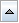
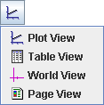
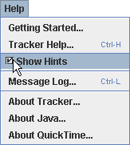
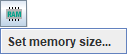

1. Glavni pogled

Vsak
zavihek programa
Tracker, kot v zgornjem primeru "Untitled" , prikazuje naslednje
komponente:
- Glavni
pogled na video, ki prikazuje video slike, prekrite s sledmi. Video
pogled ima fiksno, stabilno video sliko. Sledi so označene v video
pogledu in jih lahko tu tudi urejamo.
- Vrstico
z menuji, ki nudi dostop do večine ukazov programa in nastavitev.
Nekateri elementi menuja vsebujejo ikone, ki prikazujejo. kateri gumbi
v orodni vrstici opravljajo enake akcije.
- Dvovrstično
orodno vrstico, prikazano neposredno
pod vrstico z menuji. Tu imamo hiter dostop do pogosto uporabljenih
kontrol, orodij, nastavitev sledi in podatkovnih polj.
- Predvajalnik, ki krmili predvajanje
videa in nastavitve video izrezka.
- Dodatne poglede v dodatnih panojih s pogledi.
Pogled odpremo, zapremo ali mu spremenimo velikost s klikom ali
vlečenjem delilcev med panoji ali z izbiro želenega pogleda c
menuju "Okno".
Pogled lahko maksimiramo ali obnovimo s klikom na gumb  ali z dvoklikom na njegovo orodno vrstico.
2. Orodna
vrstica
Vrstni red
gumbov v glavni orodni vrstici se precej ujema s koraki, potrebnimi za
analizo videa. Vsebuje naslednje (od leve proti desni):
- Odpri:
gumb odpre v novem zavihku digitalni video ali datoteko tracker.
- Shrani:gumb
shrani trenutni zavihek v datoteko tracker.
- Nastavitve
izrezka: gumb prikaže ali skrije inšpektor video izrezka.
- Kalibracija:
gumb prikaže ali skrije merilno palico, kalibracijske točke oziroma odmik izhodišča.
- Osi:
gumb prikaže ali skrije koordinatne osi.
- Tvori:
gumb tvori novo sled v tekočem zavihku.
- Kontrola
sledi: gumb prikaže ali skrije kontrolo sledi.
- Povečava:
gumb vključi orodje za povečanje/pomanjšanje.
- Sledi:
gumb nastavi dolžino vseh sledi.
- Označbe:
gumb prikaže ali skrije vse označbe.
- Pot:
gumb prikaže ali skrije vse poti.
- Položaji:
gumb prikaže ali skrije položaje vseh točkovnih mas.
- Hitrosti:
gumb prikaže ali skrije vektorje hitrosti vseh točkovnih mas.
- Pospeški:
gumb prikaže ali skrije vektorje pospeškov vseh točkovnih mas.
- Raztezanje:
gumb raztegne vse vektorje.
- Dinamika:
gumb množi vse vektorje gibanja z maso.
- Opombe:
gumb prikaže ali skrije Okno z opombami.
Spodnjo
plast orodne vrstice običajno uporabljamo za podatke o izbrani sledi in
vhodna polja, vsebuje pa tudi gumb upravnik pomnilnika,
ki upravlja in nadzoruje status pomnilnika programa Tracker. Več
informacij o tem zasledimo v poglavju Upravljanje s
pomnilnikom.
3. Dodatni
pogledi
V našem
primeru je bila dodana sled z modelom delca. Odprti so panoji za
prikaz vseh tipov pogledov in položajev.
- Glavni
video pogled (pano 0--levo zgoraj) prikazuje video in sledi v video
prostoru. V našem primeru je video slika (belo ozadje) fiksna, čeprav
so osi nagnjene.
- Grafični
pogled (pano 1--desno zgoraj) prikazuje enega ali več grafov
podatkov o sledeh. Več grafov je lahko razporejenih v stolpcu.
- Tabelarični
pogled (pano 2--desno spodaj) prikazuje podatkovno tabelo s podatki
o sledeh.
- Pogled
sveta (pano 3--spodaj v sredini) prikazuje video in sledi v
prostoru sveta. V pogledu sveta so osi fiksne (z osjo x usmerjeno v
desno), zato je nagnjen video.
- Pogled
strani (pano 4--spodaj levo) prikazuje sekstovne in hipertekstne
strani.
Z izjemo
glavnega video pogleda lahko drugi panoji prikazujejo katerikoli tip
pogleda. Želeni tip pogleda izberemo tako, da kliknemo na gumb za izbiro
pogleda na levi strani orodne vrstice pogleda in izberemo v
spustnem seznamu.

4. Namigi
Privzeto
prikazuje Tracker namige v rumenem pravokotniku v
desnem spodnjem kotu glavnega pogleda. Namigi so uporabni za
priložnostne uporabnike programa Tracker. Izkušeni uporabniki lahko
namige izključijo z razkljukanjem opcije Prikaži namige
v menuju Pomoč ali v zavihku Prikaz pogovornega okna s preferencami.

5. Ozadje
Ozadje je
bele barve, običajno skrito z video posnetkom. Nikdar ni manjše od
videa, lahko pa je večje, kar lahko izberemo v menuju Urejanje|Velikost
matrike. Večja velikost matrike poveča pordočje risanja na
pogledu z videom in v drugih pogledih.
To je uporabno, ko bi bile sledi ali mosi risane izven zaslona, kar
je pogost primer pri sledeh z using modelom z delci, pari
kalibracijskih točk ali odmiki
izhodišča.
6. Jeziki
Pogovorni
jezik, ki je drugačen od privzetega, izberemo v menuju Uredi|Jezik
ali v zavihku Prikaz v pogovornem oknu s preferencami.
7. Razveljavi
in obnovi
Večino
operacij v programu Tracker nahko razveljavimo ali ponovno uveljavimo s
postavkami Razveljavi in Obnovi v
menuju Urejanje.
Število operacij razveljavljanja ni omejeno.
8. Upravljanje
s pomnilnikom
Privzeto
ima
Tracker na voljo najmanj 64MB pomnilnika (odvisno od računalnika),
dovolj za obravnavo ne prevelikih video posnetkov. Pri analizi velikih
ali večkratnih posnetkov oziroma dolgih slikovnih zaporedij bomo
verjetno potrebovali več pomnilnika. Gumb upravnik
pomnilnika v spodnjem
delu orodne vrstice prikaže podatke o
trenutnem stanju pomnilnika. Besedilo na gumbu se pobarva rdeče, ko se
približamo meji trenutnega pomnilnika.
Več
pomnilnika lahko nastavimo v zavihku "Čas izvajanja" v pogovornem oknu s preferencami. Klik na gumb
upravnika pomnilnika odpre element menuja, ki omogoča dostop do tega
zavihka.

9. Preference
programa Tracker
Pogovorno
okno s preferencami omogoča uporabniku nastavljanje najbolj
želene konfiguracije, velikosti pomnilnika in druge lastnosti programa
Tracker. Te preference pomnimo v datoteki
".tracker.prefs", ki jo program ob zagonu avtomatsko prebere. Za prikaz
pogovornega okna s preferencami izberemo postavko v menuju Urejanje|Preference.
Nastavljamo
preference v naslednjih zavihkih:
- Zavihek
Konfiguracija. Konfiguracija se nanaša na menuje, gumbe in
druge lastnosti uporabniškega vmesnika programa Tracker. Z odkljukanjem
postavk v zavihku o konfiguraciji lahko neželene lastnosti skrijemo. To
je posebej uporabno pri prvem uvajanju študentov v program Tracker. S
tem, ko ti pridobivajo izkušnje s programom, lahko po potrebi
prikazujemo dodatne lastnosti.
Če odkljukamo postavko config.saveWithData, bo
prilagojena konfiguracija shranjena v tracker datoteko (.trk), ko
shranimo podatke v zavihku Tracker. Konfiguracija, shranjena v datoteki
trk bo pri nalaganju prekrila privzeto konfiguracijo.
Če želimo nastavljeno konfiguracijo pomniti kot privzeto (na pr.za nov
zavihek ali za datoteke trk brez prilagojene konfiguracije), kliknemo
na gumb Shrani kot privzeto.
- Zavihek
Prikaz. V spustnem seznamu izberemo želeni jezik.
Za prikaz namigov ob zagonu odkljukamo Privzeto prikaži namige.
Za privzete enote kotov laahko
izberemo stopinje ali radiane.
- Zavihek
Čas izvajanja. Nastavimo lahko preferenčno velikost
pomnilnika ali odkljukamo Uporabi privzeto
in tako izberemo privzeto velikost
(običajno 64MB, vendar se lahko razlikuje). V spustnem seznamu izberemo
želeni Izgled ali izberemo default
da izberemo privzeti izgled (kar se med platformami lahko razlikuje).
Če želimo program Tracker takoj pognati z novo velikostjo pomnilnika in
izgledom, kliknemo na gumb Ponovno zaženi.
- Zavihek
Video. Izberemo želeni video pogon (Xuggle
ali QuickTime), če sta na našem računalniku oba na voljo. Za opcije
predvajanja za video posnetke, odprte z Xuggle lahko izberemo
opcijo hitro
(lahko bo sunkovito) ali gladko (lahko bo počasno).
- Zavihek
Drugo. Nastavimo želeno število datotek , odprtih v
menuju Datoteka|Odpri nedavne, olahko pa tudi
zbrišemo trenutne postavke v tem menuju. Izberemo lahko tudi želeni
interval avtomatskega preverjanja nadgradenj ali kliknemo na gumb Preveri
sedaj za takojšnje preverjanje.